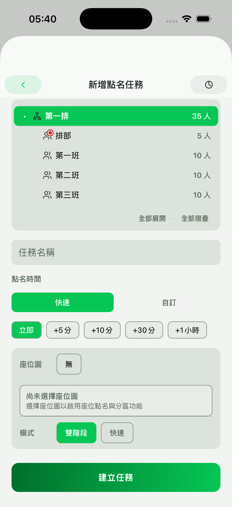
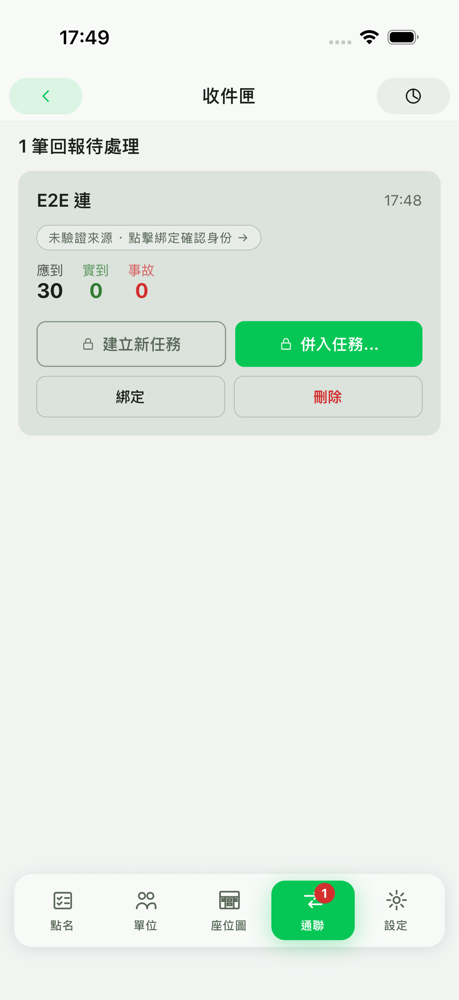
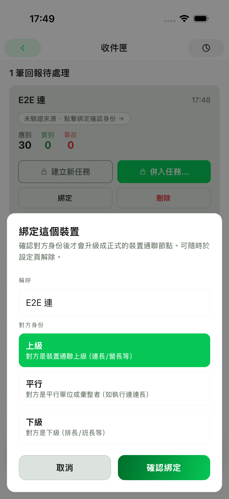
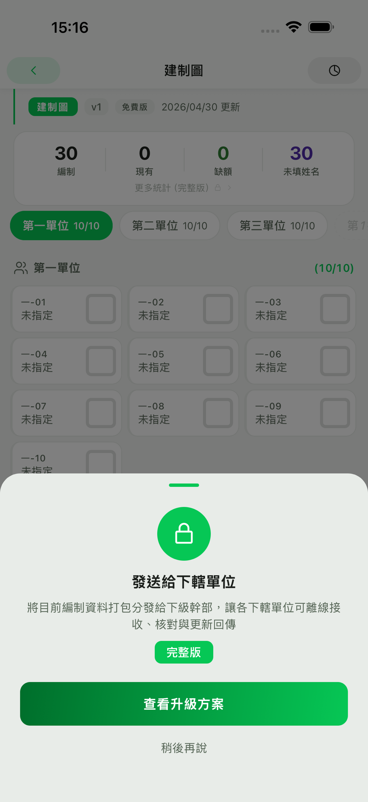

- 免費版
- 每月 30 個點名任務
- 基礎版
- 每月 200 個點名任務
- 完整版
- 點名任務不限
第一章
建立單位
第一次使用以三步驟為準：先建立第一個單位，成員姓名可以稍後補，最後建立第一個點名任務。
歡迎使用到齊！
3 步走完就能開始點名或收資料碼
-
1
建立第一個單位
走「軍種 → 命名 → 完成」三步，3 分鐘完成。
-
2
補入成員姓名（選用）
只想收上級資料碼？可直接跳第 3 步開始掃。要發送或自己跑點名才需要成員，可手動補名字、掃資料碼或從相簿匯入別人傳的建制檔。
-
3
建第一個任務
回點名頁點右下「＋」開始第一次點名，也能掃資料碼直接收上級報告。
＋ 立即建立第一個單位
建立單位只需要先完成軍種、命名與完成三步。這是後續任務、座位圖與報告的共同來源。
如果只是要收上級資料碼，可以先跳過成員。需要發送或自己跑點名時，再手動補名字、掃資料碼或匯入建制檔。
回點名頁按右下角「＋」開始第一次點名；如果已收到上級資料，也可以掃資料碼直接收報告。
第二章
建立座位圖
座位圖讓點名可以直接對位置操作。不同方案會影響座位圖數量與每張座位圖可放的座位數。


先決定隊形、座位數與分區，再把人員放到位置上。完成後即可在點名任務中使用。
建立點名任務時可以選用既有座位圖，適合固定班排或每日重複使用的場景。
免費版最多 5 張、每張 50 席；基礎版最多 20 張、每張 200 席；完整版不限。
第三章
建立點名任務
點名任務是日常使用的核心。你可以用列表逐人標記，也可以切到座位圖直接點選位置。


選擇單位、任務名稱與時間，再指定是否使用座位圖。建立後會回到任務列表。
在列表或座位圖中標記到位、缺席或事故。兩種模式都會更新同一份點名結果。
完成標記後，先看應到、實到與事故統計，再進入報告或圖片匯出流程。
第四章
收件匣與重送對照
跨裝置資料不會直接併入正式任務。到齊會先放進收件匣，讓你確認來源、內容與是否重送。



收到資料後先看來源是否已驗證。未驗證來源需要先確認身分，避免誤收資料。
你可以建立新任務、併入既有任務，或先保留在收件匣中等候確認。
同一來源重送資料時，先比對內容差異，再決定是否覆蓋或保留既有結果。
第五章
訂閱方案
方案說明只列目前應用程式實際限制。價格與免費試用資格以付款畫面顯示為準。


- 免費版：每月 30 個點名任務、5 張座位圖、每張 50 席、圖片匯出每日 5 張且含浮水印。
- 基礎版：每月 200 個點名任務、20 張座位圖、每張 200 席、圖片匯出每日 10 張且無浮水印。
- 完整版：點名任務、座位圖張數、每張座位圖座位數與圖片匯出不限。
- 資料保留：取消或降級不會刪除既有資料；超過目前方案上限時，新增、寫入或匯出會重新套用方案限制。